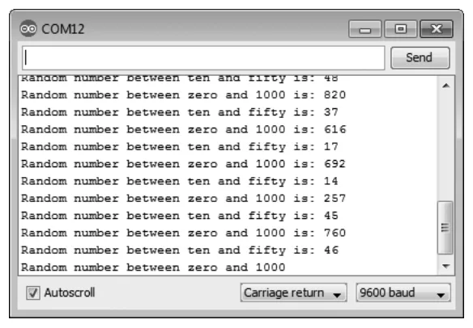

The ability for a program to generate random numbers can be very useful in games and effects. For example, you can use random numbers to play a dice or lottery game with the Arduino, to create lighting effects with LEDs, or to create visual or auditory effects for a quiz game with the Arduino. Unfortunately, the Arduino can’t choose a purely random number by itself. You have to help it by providing a seed, an arbitrary starting number used in the calculations to generate a random number.
Using Ambient Current to Generate a Random Number
The easiest way to generate a random number with the Arduino is to write a program that reads the voltage from a free (disconnected) analog pin (for example, analog pin zero) with this line in void setup():
randomSeed(analogRead(0));Even when nothing is wired to an analog input on the Arduino, static electricity in the environment creates a tiny, measurable voltage. The amount of this voltage is quite random. We can use this measure of ambient voltage as our seed to generate a random number and then allocate it to an integer variable using the random(lower, upper) function. We can use the parameters lower and upper to set the lower and upper limits of the range for the random number. For example, to generate a random number between 100 and 1,000, you would use the following:
int a = 0;
a = random(100, 1001);We’ve used the number 1,001 rather than 1,000 because the 1,001 upper limit is exclusive, meaning it’s not included in the range.
That said, to generate a random number between 0 and some number, you can just enter the upper limit. Here’s how you would generate a random number between 0 and 6:
a = random(7);The example sketch in Listing 6-1 would generate random numbers between 0 and 1,000, as well as numbers between 10 and 50:
// Listing 6-1
int r = 0;
void setup()
{
randomSeed(analogRead(0));
Serial.begin(9600);
}
void loop()
{
Serial.print("Random number between zero and 1000 is: ");
r = random(0, 1001);
Serial.println(r);
Serial.print("Random number between ten and fifty is: ");
r = random(10, 51);
Serial.println(r);
delay(1000);
}Figure 6-1 shows the result displayed on the Serial Monitor.

Now that you know how to generate random numbers, let’s put that knowledge to good use by creating an electronic die.